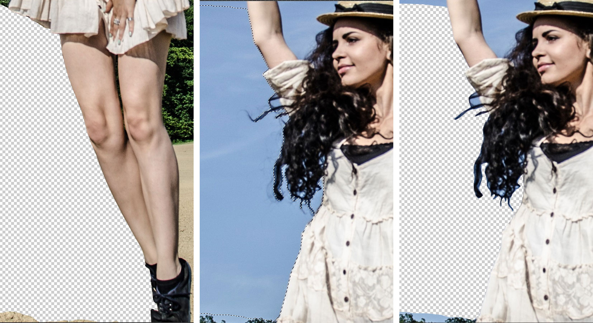
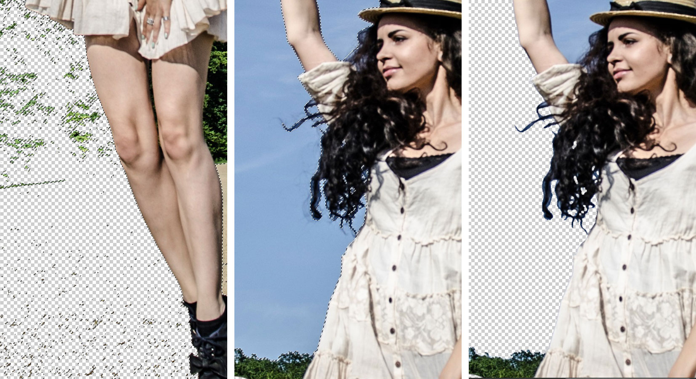
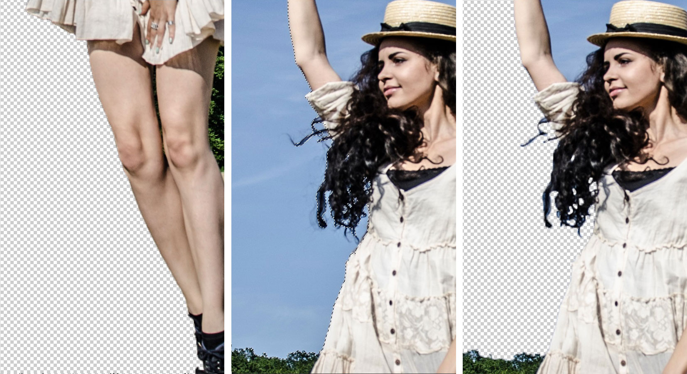
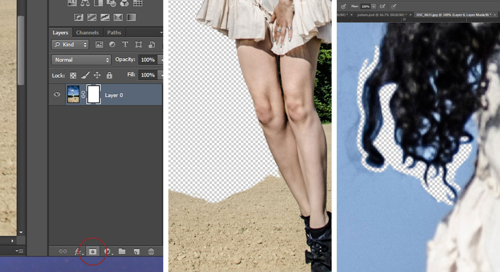

// Photoshop
How to cut out an object from a busy backround; a brief rundown of available tools and methods, how to use each and which are most efficient time and quality wise.

If you've been working with Photoshop for some time, whether it is photography editing or any other kind of digital magic, you've probably come across the need to cut out objects from a background that is not nicely and uniformly coloured. Photoshop offers you blatantly obvious tools for such an undertaking, but there are ways to achieve the same effect throughout other means and tools. Whether you prefer one or the other is a totally personal matter but here is a rundown of some (not all, there's probably dozens) techniques know to me and what the outcome and quality of each is.
Lasso Tool
When I say Lasso Tool, I'm only referring to the Magnetic Lasso Tool since it is the only useful one of the Lasso bunch. You can't really get any precision from the regular Lasso Tool especially around edges, where it really matters. The Polygonal Lasso draws with straight lines; if you happen to be a lucky bastard that has a perfectly squared object with straight sharp edges to cut out, then this is your best friend and you'll be done in a blink. Otherwise, this tool is pretty useless, you can combine it with other cut-out methods, but more of that tale later.
The Magnetic Lasso does pretty good at selecting along edges as long as the edge is clearly defined (example: through lens focus, colour, texture). Once you have a busy edge line with a equally busy background you can pretty much forget the hole Lasso bunch, the only thing you'll get from them is a headache and broken promises. You can find the Lasso Tool collection on the left hand tool bar; click the lasso icon to get the rest of the variety.
Keyboard shortcut: L
Magnetic Wand Tool
Don't get me wrong, I love and adore the Magic Wand Tool...let's call her Maggie for convenience...I love and adore Maggie for quick fixes; when you just need to cut out something from a white background and be done with it, then Maggie is you best friend and the two of you have a ball and all is well. But Maggie is not the most accurate and does not think too highly of quality. It may seem like you made a cut-out worthy of glory, but as soon as you zoom in on the edge, you see the rigidness and pixelization...zoom-in-horror. Well, I don't want to blacken Maggie's image too much, but if you're looking for precision and quality edge work, don't count on Maggie.
You can find her right beneath the Lasso Friends. To add more to previous selections, hold down the shift key and add away.
Keyboard shortcut: W
Quick Selection Tool
This is a fairly new tool but it has already won many peoples hearts. It's easy to use, efficient and like the name suggests; (can be) quick. Drag the brush against the edge to make selections, if you select unwanted pixels, hold down the Alt key and brush over the overdrawn areas to deselect. The quality of the cut-out depends on you completely. If you use a bigger brush and make a quick selection, the quality of edge work will obviously be lower, even blurry. But if you have willpower, time and are ready to make your eyes bleed, you can choose the minimal brush size and do a precise and really crisp edge selection where the overall outcome will be better. I've noticed that I tend to gravitate towards this tool more and more lately.
Like in the regular ol' brush settings, you can adjust the size, hardness and spacing of this tool to make your selection even better. It just all depends on you and how much you are willing to get into you cutting-out process.
Keyboard shortcut: W
Layer Mask
Every time there is talk about the wary Layer Mask in PS tutorials, there's always this hint of mystery and intrigue about it since the Tutorial-Makers like to point out that the Layer Mask is something that has to be learned, overcome and understood. I'm here to tell you it's all bull and that this tool is something really simple and useful. The only thing mystic about it is that it likes to escape your memory --- just remember that you have it at your disposal.
What does it do? It basically gives you the power to “undo” whenever, whatever and as many times as you desire. While you work on an image, keep the layer mask selected (the white box on the layer panel) and make your brush colour black. Do all of your erasing this way. If you make a blooper, just change the brush colour to white and it will bring back the original image wherever you brush over. You can use this tool combined with the ones mentioned above, just make sure that you make the selection on the image box (right) in the layer panel, and select the white mask box (left) to erase from the selection you have made.
I prefer to just stick to the brush tool while erasing with the Layer Mask. Truth be told, it's not the easiest job especially when using mouse or touchpad; so you'd probably need a tablet to make your life easier but you will get the best edge quality and crispiness. Once you get used to this kind of work, you'll become quicker by the day, pinky promise.
To make a layer mask, have your desired layer selected then click the “Add vector mask” icon on the bottom of the layers panel (shown on image below).
Example:
To make this image I used the Layer Mask principle with the brush tool (soft and small brush + tablet + a lot of patience), no other selection methods. I especially like to work this way when cutting out hair or hair strands. I don't have a wide angle lens; so, to achieve the wide angle effect, I photographed the model with a 50mm f/1.8 lens and took 9 pictures of the background to combine them into a photo merge in Photoshop later on. This way I could position the model where I wanted her to be. I could've shot the model against a neutral background as to make the cutting-out job easier, but this way you don't have to worry about the light-shadows direction, light intensity or proportions. But more about that whole process in an upcoming post.